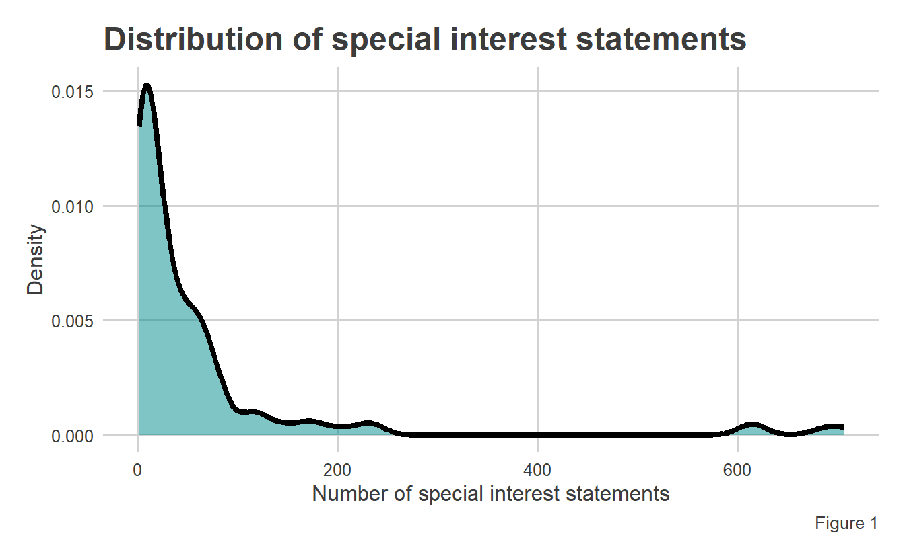
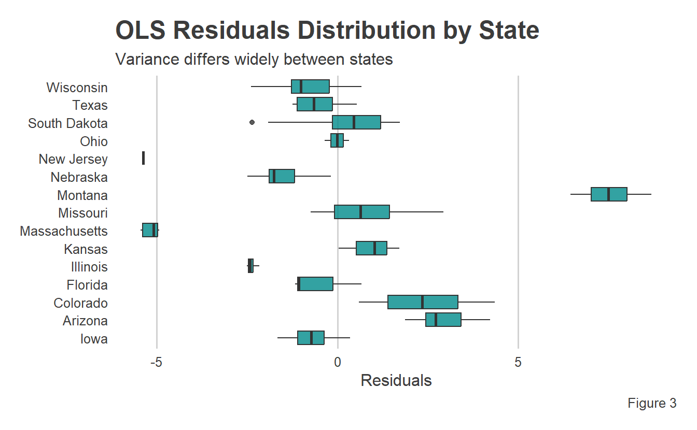

states <- death |>filter(year >=min(gun_group_count$year)) |>left_join(gun_group_count) |>mutate(lobbyist_positions =if_else(is.na(lobbyist_positions), 0, lobbyist_positions ),gun_suicides_per_100k = gun_suicides / (population /100000),log_positions =log(lobbyist_positions) ) |>left_join(mean_death_year) |>select(-c(fem_fs_s, male_fs_s)) |>filter(lobbyist_positions >0)# choose state with the median gun_suicides_per_100k as baselinestates_grouped <- states |>group_by(state) |>summarise(means =mean(gun_suicides_per_100k, na.rm = T))median_rate <-median(states_grouped$means, na.rm = T)baseline_state <- states_grouped |>filter(means == median_rate) |>pull(state)# get mean number of special interest statements per year/statemean_log_positions <-mean(states$log_positions)# create final dataset for modelingmodel_data <- states |>mutate(state =factor( state, levels =c(baseline_state, sort(unique(state[state != baseline_state]))) ),active_lobby =if_else(lobbyist_positions >0, T, F),region =case_when( state %in%c("Texas", "Florida") ~"South", state %in%c("South Dakota", "Nebraska", "Kansas", "Missouri", "Iowa") ~"Midwest", state %in%c("Wisconsin", "Illinois", "Ohio") ~"Great Lakes", state %in%c("Montana", "Colorado", "Arizona") ~"West", state %in%c("Massachusetts", "New Jersey", "Rhode Island", "Maryland") ~"Northeast",TRUE~"Other" ) ) |>filter(state !="District of Columbia") |>na.omit()
Introduction
Gun violence continues to be a staple of American politics, especially following a series of high-profile assassination attempts on President-Elect Trump and the recent murder of UnitedHealthcare CEO Brian Thompson. Americans in opposition to federal gun ownership restrictions often cite mental health as the reason for America’s gun violence epidemic. In contrast, supporters of gun restrictions regularly blame America’s comparatively loose regulatory environment and special interest group involvement for the violence.
According to the Centers for Disease Control and Prevention (CDC), suicide by firearm accounts for more than half of gun deaths in the United States. While school shootings, mass shootings, and high-profile assassinations are regularly brought into mainstream political discourse, suicide by gun is less frequently discussed. In this study, we investigate the potential relationships between pro-gun special interest group activity, mental health, and suicide by firearm. We aggregate over ten million responses to CDC health surveys, three million special interest group reports, and suicide by firearm rates for all 50 states. These data are then used to build a multiple linear regression model to control for the impact of lobbying efforts and mental health on rates of suicide by gun. Therefore, our research question is: Does increased pro-gun special interestactivity lead to additional suicide by gun, controlling for mental health?
The Data
We have aggregated and cleaned data from three distinct sources. First, mental health data is pulled from the CDC Behavioral Risk Factor Surveillance Survey (BRFSS). The survey began including mental health questions in 1994. The question of interest for this study is:
“Now thinking about your mental health, which includes stress, depression, andproblems with emotions, for how many days during the past 30 days was yourmental health not good?”
Responses are given an integer value between 1 and 30. Respondents with zero days of poor mental health are encoded with the value 88, which we have re-encoded as 0. Non-responses are not considered. Ultimately, 10,249,613 were considered, aggregated by state and year, and included in the model. We encode these responses as binary: “Poor” or “Good” mental health. The CDC defines 15 or more days of poor mental health in a 30-day period as concerning, so we encode responses of 15 or greater as “Poor” and others as “Good.”
The CDC also provides absolute number and per-capita suicide data by state through their CDC WONDER platform. Per-state proportions of suicides that were completed with firearms were compiled by the RAND Corporation, a non-profit, non-partisan think tank that tracks and reports on several high-profile political issues in the United States. We calculate total firearm suicide deaths by multiplying the total suicides of all types reported by the CDC and the proportion of those that were completed by firearm reported by RAND.
Special interest group activity is provided by Hall et al. (2024). Their special interest dataset reports 13,619,409 individual state-level special interest group positions. We filter those positions using regular expression filters built by hand from group names listed on OpenSecrets, the website of the eponymous non-profit organization that tracks lobbying groups and campaign finance in Washington, DC. We aggregate firearm-related special interest group activity by year and state. Once gun-related groups were compiled, we manually reviewed the 1,168 groups to remove any anti-firearm special interest groups from the data. Note that manual review is prone to human error. Further details of these limitations are in the discussion section of this article.
Most year/state combinations have no special interest group representation (i.e., the number of reported special interest statements is 0). Initially, we attempted to include these zero values but ran into issues with heteroscedasticity. Ultimately, we maintained homoscedasticity by removing rows with no special interest involvement. This reduction in data lessened the scope of our findings to states in which the pro-gun lobby has been active since 1997 but allowed us to construct a more trustworthy model. The resulting dataset is 186 observations in which a pro-gun group was active in a given state and year.
Methodology
In this study, we first construct an ordinary least squares (OLS) model using state, the proportion of poor mental health, and the number of special interest statements to predict the number of gun deaths from self-inflicted gunshot wounds per 100,000 citizens. However, Figure 1 shows that the number of special interest statements in our dataset is power-law distributed. Thus, we perform a log transformation to arrive at the predictor that we ultimately use in our model. Figure 2 shows the distribution of the log-transformed number of special interest statements used in our model. In all cases, we will assume an \(\alpha=0.05\) level of significance.
Click here for code
model_data |>ggplot(aes(x = lobbyist_positions)) +geom_density(linewidth =1.5, fill ="darkcyan", alpha =0.5) +theme_fivethirtyeight() +labs(x ="Number of special interest statements",y ="Density",title ="Distribution of special interest statements",caption ="Figure 1" ) +theme(plot.background =element_rect(fill ="white"),panel.background =element_rect(fill ="white"),axis.title =element_text() )

Click here for code
model_data |>ggplot(aes(x = log_positions)) +geom_density(linewidth =1.5, fill ="darkcyan", alpha =0.5) +theme_fivethirtyeight() +labs(x ="Number of special interest statements (log-transformed)",y ="Density",title ="Log-transformed special interest statements",caption ="Figure 2" ) +theme(plot.background =element_rect(fill ="white"),panel.background =element_rect(fill ="white"),axis.title =element_text() )
We evaluated the assumption of homoscedasticity (i.e., constant variance of residuals) using a Breusch-Pagan (BP) test on our OLS model. However, with a p-value of 0.007, our BP test showed a violation of homoscedasticity. Figure 3 shows the distribution of residuals by state for our OLS model. It is trivial to observe that residual variance differs widely between states. To adjust for these changes in residual variance, we construct a weighted linear regression model using weights derived from the following equation: \[
w_i = \frac{1}{\sqrt{\left|r_i\right|}}
\]
where \(r_i\) is the residual for observation \(i\).
Click here for code
resid_data |>ggplot(aes(y = state, x = resids)) +geom_boxplot(fill ="darkcyan", alpha =0.8) +theme_fivethirtyeight() +labs(x ="Residuals",y =element_blank(),title ="OLS Residuals Distribution by State",subtitle ="Variance differs widely between states",caption ="Figure 3" ) +theme(plot.background =element_rect(fill ="white"),panel.background =element_rect(fill ="white"),panel.grid.major.y =element_blank(),axis.title.x =element_text() )

In addition to adjusting weights based on initial residuals, we add another predictor, state, to create a weighted regression model. State was withheld from the OLS model due to its addition causing inferior weights to be produced.
Results
In both the OLS and weighted models, we use state, the proportion of poor mental health reports, and the log-transformed number of special interest statements to predict the number of gun deaths per 100,000 citizens in a state. Figures 4 and 5 show the predicted values, residuals, and BP test results for both the unweighted and weighted models. We observe a much higher (i.e., improved) BP score for our weighted model, although visually, the performance benefit is less apparent.
To verify the normality of our residuals, we conduct a Shapiro-Wilk test. A significant p-value from a Shapiro-Wilk test (at the \(\alpha=0.05\) level) was produced by the Shapiro-Wilk test, which rejects the null hypothesis that our residuals come from a normal distribution. However, if we remove a single residual (the largest one), our Shapiro-Wilk p-value becomes 0.8. Therefore, we can be confident in the normality of our residuals with the exception of a single outlier. Figure 6 shows the result of removing that outlier, and Figure 7 further verifies our model’s normality using a quantile-quantile plot.
Now that we have verified the results of our model, we can display its results. Figure 8 contains the weighted regression model output. Recall that states are not included here but are corrected for. Results for all states in the dataset are included in the appendix.
Click here for code
tab_no_states <-tidy(updated_model) |>filter(!str_detect(term, "state"))tab_no_states$term <-c("Intercept", "log(Positions)", "Poor mental health proportion")colnames(tab_no_states) <-c("Variable", "Estimate", "Std. Error", "Statistic","P-value")tab_no_states |>gt() |>tab_header(md("**Weighted model output (no states listed)**")) |>fmt_number(decimals =3) |>text_transform(locations =cells_body(),fn =function(x) {case_when( x <0.001& x !=0~"<0.001",TRUE~as.character(x) ) } )
Weighted model output (no states listed)
Variable
Estimate
Std. Error
Statistic
P-value
Intercept
5.884
1.192
4.935
<0.001
log(Positions)
0.176
0.081
2.179
0.032
Poor mental health proportion
<0.001
14.884
<0.001
0.885
Thus, our final model is given by the equation: \[
y_i = 5.884 + 0.18ln(x_{1i}) + \beta_2x_{2i} + \epsilon
\]
where \(x_1\) is the number of pro-gun statements in a state, \(x_2\) state in question, \(\beta_3\) per-state coefficient (each can be found in the appendix), and \(\epsilon\) is an error term.
We observe from our model that, holding mental health and state constant, every \(e\)-fold increase (i.e., \(\approx 2.72\)-fold) in the number of pro-gun special interest statements, we expect an additional 0.18 deaths per 100,000 citizens in that state (\(p = 0.03\)). Also importantly, with a p-value of 0.89, mental health does not show a statistically significant impact on per-capita rate of suicide by firearm while holding state and special interest activity constant.
Discussion
In this study, we found statistically significant evidence that, holding state of residence and self-reported mental health constant, increasing pro-gun special interest group activity leads to additional suicide by gun. Perhaps equally importantly, we have shown that, while holding pro-gun special interest activity constant, self-reported mental health rates do not show a statistically significant impact on the rate of suicide by gun.
However, there are some crucial limitations and room for further research. First, only 17 states were ultimately included in the dataset used to train the model. Those 17 states were the ones in which pro-gun special interest activity was tracked by Hall et al. It is possible that using a different metric for pro-gun activism (pro-gun social media pages, pro-gun protests, etc.) would result in more robust data across all states, leading to a much larger dataset and more room for additional predictors.
Second, pro- and anti-gun groups were tagged by hand. We developed custom regular expressions using manual research, but it is possible that some pro-gun groups were removed and some anti-gun groups remained in the dataset. A dataset tagged with “pro-gun” and “anti-gun” when the dataset was created would help remove potential human error during filtering.
Finally, although our results were statistically significant and passed model assumption checks, we did need to remove an outlier residual to pass our Shapiro-Wilk test. There may be additional covariates for which a broader dataset may be able to correct to strengthen our confidence in our model further.
Conclusion
The American gun debate shows no signs of ceasing anytime soon. However, we have shown that there is reasonable doubt to the claim that America’s gun violence problems are caused by mental health alone. Although our result leaves room for future research, there is statistically significant evidence that, even when holding reported mental health status constant, pro-gun lobbying activity causes deaths at an expected 3.38 deaths for each additional pro-gun special interest effort. While there are philosophical aspects to the gun debate that statistics can never affirm or deny, we can be reasonably confident that the specific claim of mental health being the sole cause of American gun violence is not supported by evidence. Although the dispute continues, we hope our humble contribution to the national discussion can help advance the cause of rational, evidence-based debate.
As always, if you want to support my work, feel free to buy me a coffee or stop by Discord and say hello!
Appendix
Below is the total result table, including all 17 states in the dataset. To select the baseline state, we took the average of all states’ suicide by gun per 100,000 residence rates. The median of those weights served as the baseline. In this case, the baseline state was Iowa.
Click here for code
full_table <-tidy(updated_model) |>mutate(term =str_replace(term, "state", ""))full_table$term[1:3] <-c("Intercept", "log(Positions)","Poor mental health proportion")state_p_vals <- full_table$p.value[-(1:3)]p_adjusted <-p.adjust(state_p_vals, method ="BH")full_table$p.value[-(1:3)] <- p_adjustedfull_table |>gt() |>fmt_number(decimals =3) |>text_transform(locations =cells_body(),fn =function(x) {case_when( x <0.001& x !=0~"<0.001",TRUE~as.character(x) ) } ) |>tab_header(md("**Full model results**"))